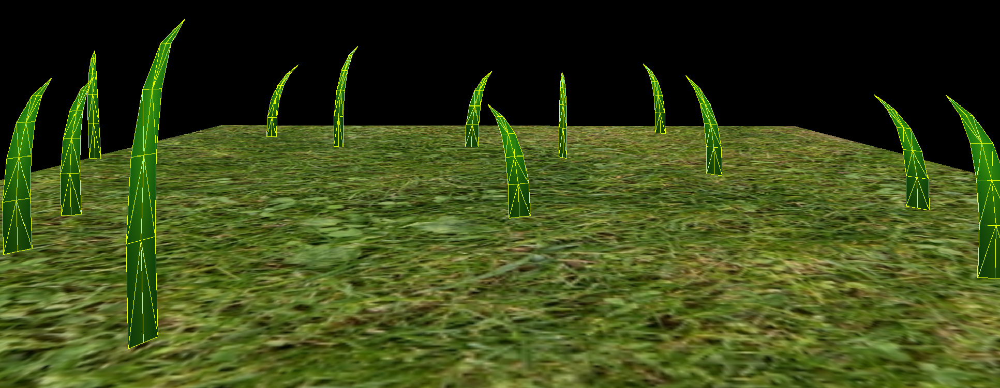
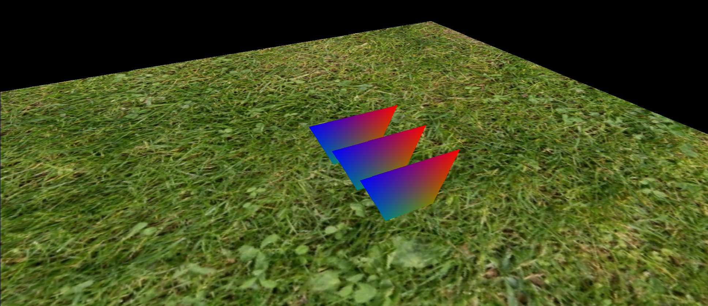
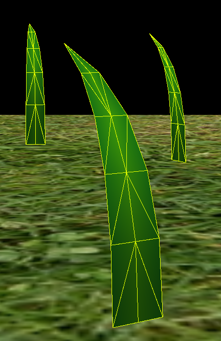
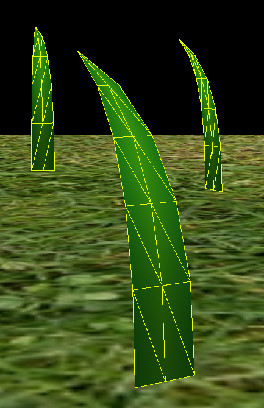
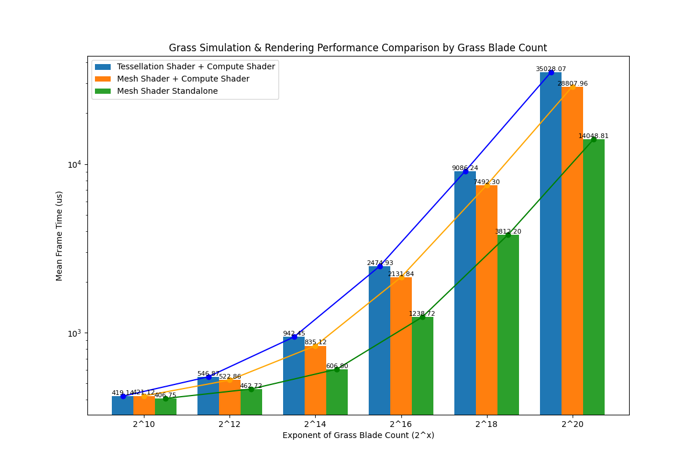

The paper first introduces a grass blade model that uses Bezier curves with three control points to represent the shape of the grass blade.
For the physical simulation, here are some parameters that can be adjusted to control the behavior of the grass blade:
These parameters are packed into 4 vec4s and are used as the input and output of the grass simulation compute shader and the input of the grass rendering vertex shader.
Every frame, the position of the tip of the grass blade v2 is updated by a compute shader based on the force contributions from three natural sources:
Here is an image to show the contribution of each force to the grass blade:

After computing the new position of the tip, the compute shader will also validate and correct it to make sure the grass is not under the ground.
To achieve higher compute and rendering performance, the paper introduces a culling process to determine which grass blades are visible to the camera and should be rendered. It includes four steps:
After the culling process, the remaining grass blades are accumulated and sent to the rendering pass to be rendered.
For grass rendering, the paper used the following pipeline:
Here is an example result of the paper:

Overall, the paper introduces a complete pipeline to simulate and render grass in real-time. The pipeline is designed to be efficient and scalable to handle a large number of grass blades and it looks good. However, it is implemented in tessellation shader, before the mesh shader pipeline is introduced in the later version of the graphics API.
The tessellation shader pipeline is a feature introduced in OpenGL 4.0 and DirectX 11 back in 2009. It allows the GPU to generate additional geometry based on the input vertices, which can be used to increase the level of detail of the rendered object. The pipeline consists of three stages:
Here is a diagram showing the tessellation shader pipeline:

The tessellation shader pipeline is widely used in game development to increase the level of detail of the terrain, water, and other complex geometry. It can also be used to implement procedural geometry generation, such as grass rendering, as introduced in the paper. However, the tessellation shader pipeline has some limitations:
You can find more about the tessellation shader pipeline in the OpenGL wiki and the Microsoft documentation. Here are some tutorials and examples to help you get started with tessellation shaders: 1, 2, 3.
The mesh shader pipeline is a new feature introduced in Vulkan 1.2 and DirectX 12 Ultimate. It's first introduced by NVIDIA in 2018 with their Turing GPU release, and it became a KHR (cross-vendor) extension in Vulkan in 2022. It allows the GPU to generate and process geometry in a more flexible and efficient way compared to the traditional fixed-function pipeline.

Looking at the classic graphics pipeline, we can see that basically the pipeline can be divided in two parts by rasterizer. The steps before rasterizer is what we are focusing today, known as geometry processing. It includes:

The mesh shader pipeline consists of the following stages:
You can find more about the mesh shader pipeline in the Vulkan specification, the DirectX-Specs and the NVIDIA Technical Blog about mesh shader when it is first introduced.
During winter break, I self studied UPenn's CIS5650 - GPU Programming and Architecture and one of their assignments is to use Vulkan to implement a grass simulation and rendering pipeline based on the paper "Responsive real-time grass rendering for general 3D scenes". The result is quite impressive, and I learned a lot about the tessellation shader pipeline and grass rendering.
Recently, AMD published a blog post about using mesh shaders to implement the same algorithm on DX12 and HLSL, but they didn't provide a detailed performance comparison between the two methods. As a graphics enthusiast, I am interested in comparing the performance of the two methods and see if mesh shader is a better solution for grass rendering, and if so, where is the bottleneck of the both methods and why.
Therefore, in this project, I will implement the grass rendering pipeline using both tessellation shader and mesh shader and compare their performance and visual quality.
For the implementation, I used the Vulkan infrastructure code from University of Pennsylvania, CIS 565: GPU Programming and Architecture, Project 5 - Vulkan Grass Rendering. The code is written in C++ and Vulkan, and it provides a basic framework for their assignment. I modified the code to implement the grass simulation and rendering algorithm using tessellation shader pipeline as what the paper did, and then I added the mesh shader pipeline to match the same visual quality of the tessellation shader pipeline. With the same visual quality, I can compare the performance of the two methods.
compute.comp based on the force contributions from three natural sources:
grass.vert: simply multiply the position with a model matrix to transform it to the world space and pass every blade's data (4 vec4) to the next stage.grass.tesc: to control the tessellation level of each grass blade. Here I used tessellationLevel = 5, which makes every blades to be tessellated into 6x3=18 vertices and 5x4=20 triangles.

grass.tese: after the fixed Tessellator stage, the 6x3 quad will be generated and here is where we can evaluate the bezier curve and generate more detailed grass blades geometry based on the data from the compute shader. I used a simple parabola function to generate the grass blade shape.
float tParabola(float u, float v) {
return (u * 2 - 1) * (1 - v * v);
}
The vertex's normal and uv is also calculated here and passed to the rasterizer, where they will be interpolated and passed to the pixel shader.
grass.frag: to render the grass blades with a simple shading method, basically just lerp a light green color and darker green color based on the uv. Also the color gets darker to the root.Here is the result of the tessellation shader pipeline: As you can see, the meadow is filled with grass blades that are moving and swaying in the wind. This demo is rendered with 1K grass blades with a really high framerate. After increating the grass blade count to 1M, the framerate drops to around 20fps.
Renderer.cpp file. To enable mesh shader, I followed the basic mesh shader setup by Sascha Willems and enabled several extensions for the Vulkan Instance and PhysicalDevice. Then a basic mesh shader pipeline is created in CreateGrassMeshShaderPipeline. At the beginning, it would only render three triangles:

Then I added the grass blade shape generation in the mesh shader meshshader.mesh. For each thread in mesh shader, I generated the vertices and primitives of 1 grass blade, which is 18 vertices and 20 triangles. The mesh shader is basically a sum of the geometry processing part of the tessellation shader pipeline. It first calculates the actual vertex count and primitive count and uses SetMeshOutputsEXT to set the output vertices and primitives. Then it reads the input data from the compute shader using the index bladeIdx = gl_GlobalInvocationID.x and the data Blade thisBlade = culledBlades.blades[bladeIdx]. The mesh shader then generates the vertices and indices based on the data and the parabola function. The vertex's normal and uv is also calculated here and passed to the rasterizer, where they will be interpolated and passed to the pixel shader. In this example we don't need to pass per-primitive data to pixel shader, but it's possible to do so by using gl_MeshPrimitivesEXT.
Here is the result of the mesh shader pipeline: As you can see, the behavior of the grass blades is the same as the tessellation shader pipeline. To verify the visual quality, I used Renderdoc and compared the two methods side by side. It turns out for the same grass blade data, they will generate the exact same geometry with the same visual quality. In the video, you can see that the two methods generated the same visual quality. This is a proof that my mesh shader implementation is correct and it can match the visual quality of the tessellation shader pipeline.
However, you might notice that the generated vertex layout is different between the two methods.
 The left image is the vertex layout generated by the tessellation shader pipeline, and the right image is the vertex layout generated by the mesh shader pipeline. As you can see, the vertex layout generated by the mesh shader pipeline is different from the tessellation shader pipeline. I didn't follow the exact same rule (if there is any) to generate the vertex layout for my mesh shader, so I just choose to generate a more regular grid pattern. This doesn't affect the visual quality of the grass blades, but it might affect the performance of the rendering pipeline.
To quickly test the performance, I also pushed the grass blade count to 1M for mesh shader: Noted that the framerate is higher, about 22-24fps, with a ~20% improvement. This is just a first impression to see if mesh shader is more efficient than tessellation shader pipeline, even with the overhead of compute shader and also my screen recording software.
To maximize the performance of the mesh shader pipeline, one obvious optimization is to merge the compute shader and mesh shader into one shader. This can reduce the overhead of the compute shader and the data transfer between the compute shader and the mesh shader.
The setup to merge the compute shader and mesh shader is quite simple, as what I did in meshshader_withcompute.mesh I just need to move the compute shader code to the beginning of the mesh shader and remove the compute shader stage from the pipeline. The mesh shader will now compute the force and apply it to the grass blade, cull the grass blade and use the data to generate the grass blades geometry directly. It would cut 1 read & write from global memory operation for each grass blade, which can be a significant performance improvement on a memory-limited application like this.
Here is the result of the merged compute shader and mesh shader pipeline:
The performance improvement is huge, with a framerate of around 55fps, which is more than 2x improvement compared to the tessellation shader pipeline.
First of all, to compare the performance of the tessellation shader pipeline and the mesh shader pipeline, I measured the frame time of the three setup under different different grass blade counts:

| Method | Exponent | Frame Time (us) | Improvement (%) |
|---|---|---|---|
| Tessellation Shader + Compute Shader | 10 | 419.14 | 0.00 |
| 12 | 546.87 | 0.00 | |
| 14 | 942.45 | 0.00 | |
| 16 | 2474.93 | 0.00 | |
| 18 | 9086.24 | 0.00 | |
| 20 | 35028.07 | 0.00 | |
| Mesh Shader + Compute Shader | 10 | 421.12 | -0.47 |
| 12 | 522.86 | 4.39 | |
| 14 | 835.12 | 11.39 | |
| 16 | 2131.84 | 13.86 | |
| 18 | 7492.30 | 17.54 | |
| 20 | 28807.96 | 17.76 | |
| Mesh Shader Standalone | 10 | 406.75 | 2.96 |
| 12 | 462.72 | 15.39 | |
| 14 | 606.80 | 35.61 | |
| 16 | 1238.72 | 49.95 | |
| 18 | 3812.20 | 58.04 | |
| 20 | 14048.81 | 59.89 |
As you can see, under any grass blade count, the mesh shader pipeline is more efficient than the tessellation shader pipeline. The scaling is getting linear around 2^16 grass blades, and the performance improvement is more significant when the grass blade count is higher. The standalone mesh shader pipeline is even more efficient than the mesh shader pipeline with compute shader, which is near 2.5x perf improvement (60% time cut) compared to the tessellation shader pipeline.
To figure out why the performance is better for mesh shader, I did a performance analysis of the three methods using Nsight Graphics by NVIDIA.
This is the comparison between the tessellation shader pipeline and the mesh shader pipeline with compute shader handling the grass simulation and culling under 1M grass blades. From the unit throughputs subgraph, you can see that tessellation shader has really steep up and downs, marking potentially inefficient scheduling of GPU work. In comparison, the mesh shader pipeline has a more stable throughput, which indicates a more efficient scheduling of GPU work. Some other observations:
Here is the graph of mesh shader pipeline also handling the grass simulation and culling under 1M grass blades:

This time, one frame only takes 16.99ms, which compared to 19.61ms + 21.83ms of the tessellation pipeline, is a near 60% time cut. Even compared to 19.61ms + 12.69ms of the mesh shader pipeline with compute shader, it's still a 47% time cut. This is because the compute shader is eliminated and the data transfer between compute shader and mesh shader is also eliminated. Although the throughputs and occupancy are lower than the mesh shader pipeline with compute shader, the overall performance is better because of the reduced overhead of the compute shader.
In this project, I implemented the grass simulation and rendering pipeline using both tessellation shader and mesh shader in Vulkan. I compared the performance of the two methods under different grass blade counts and analyzed the performance using Nsight Graphics. The results show that the mesh shader pipeline is more efficient than the tessellation shader pipeline, with a near 60% time cut under 1M grass blades, when combined with the compute shader.
This practice is valuable for me, as I learned: